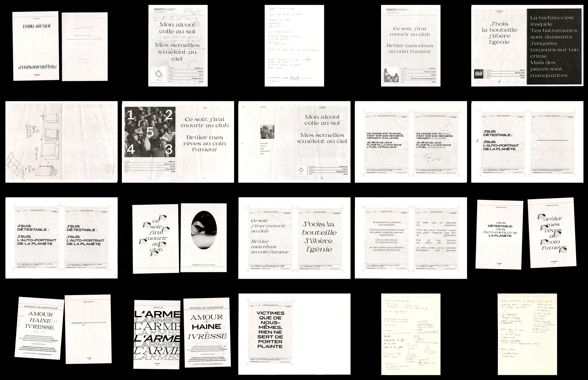

Amour Ivresse Haine est une sélection personnelle d’extraits de lyrics rassemblés autour des thèmes de l’amour, de l’ivresse et de la haine. Issus de la scène rap et hip-hop francophone, ils mettent en scène le caractère typographique Messapia, dessiné et distribué par la fonderie open source Collletttivo.
Contexte
Le sujet de ce travail consiste à réaliser le spécimen d’un caractère typographique. Le choix du caractère reposant sur nos goûts personnels, les références étudiées et notre propre stratégie typographique. Le spécimen prennant en compte l’histoire ou des faits historiques liés au caractère ou à ses usages. Il se doit de réinventer, détourner la forme traditionnelle du spécimen pour créer un objet original et néanmoins cohérent avec le registre et les caractéristiques formelles du caractère.
Concept
Mon angle de travail sur ce projet consistait à présenter les caractéristiques de la typographie et des effets produits sur le texte, à travers la mise en page de rap. Ces extraits prennent forme de manière plastique, à la façon dont Tristan Tzara ou le graphiste Robert Massin portaient attention à la spatialisation de la mise en page et la visualité des textes littéraires.
édition
Dans son style regular la font présente des tracés dont les pleins et déliés sont très contrastés. Les terminaisons, empattements et gouttes ont quant à eux une forme nette comme tranchante et viennent aiguiser la typographie telle une lame fine et coupante. Cette particularité prend tout son sens en illustrant les punchlines, textes dont les mots sont vifs et tranchants.
Le style bold du caractère Messapia est lui un dessin aux tracés linéaires et réguliers, sans empattements, dotés d’une graisse épaisse. La typographie est donc très imposante à la lecture. Les extraits de rap se voient retrouver tout le poids de leurs propos. La typographie exprime plastiquement leur impact, elle confère une masse aux mots, ils percutent notre lecture comme ils percutent nos tympans. Ces mots qui existent originellement dans leur dimension orale et sonore trouvent alors une interprétation plastique.
Recherches
Fabrication
120 x 170 mm – 102 pages
Papier Cyclus recylcé jaune 70g. Reliure pages spirale métal.